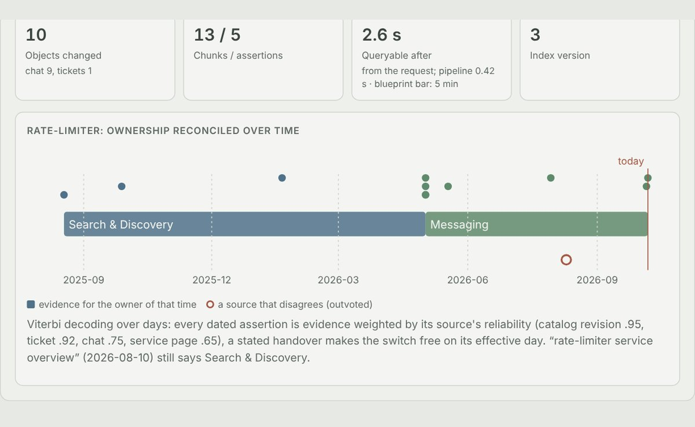
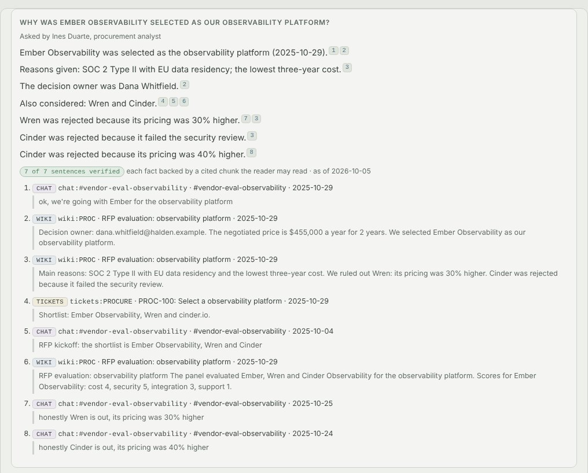
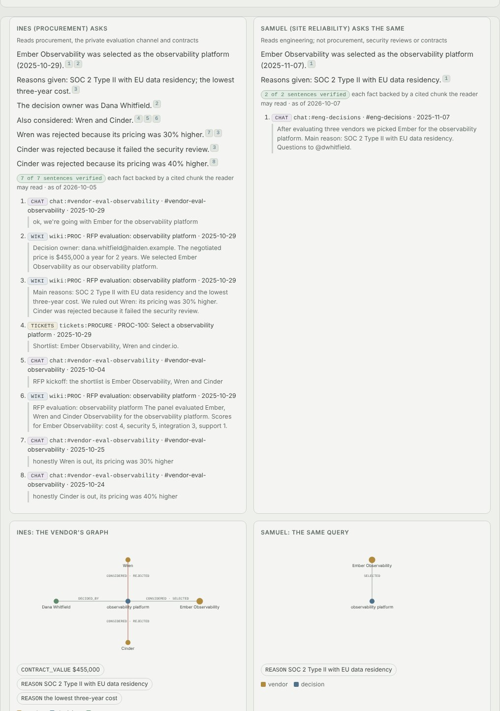
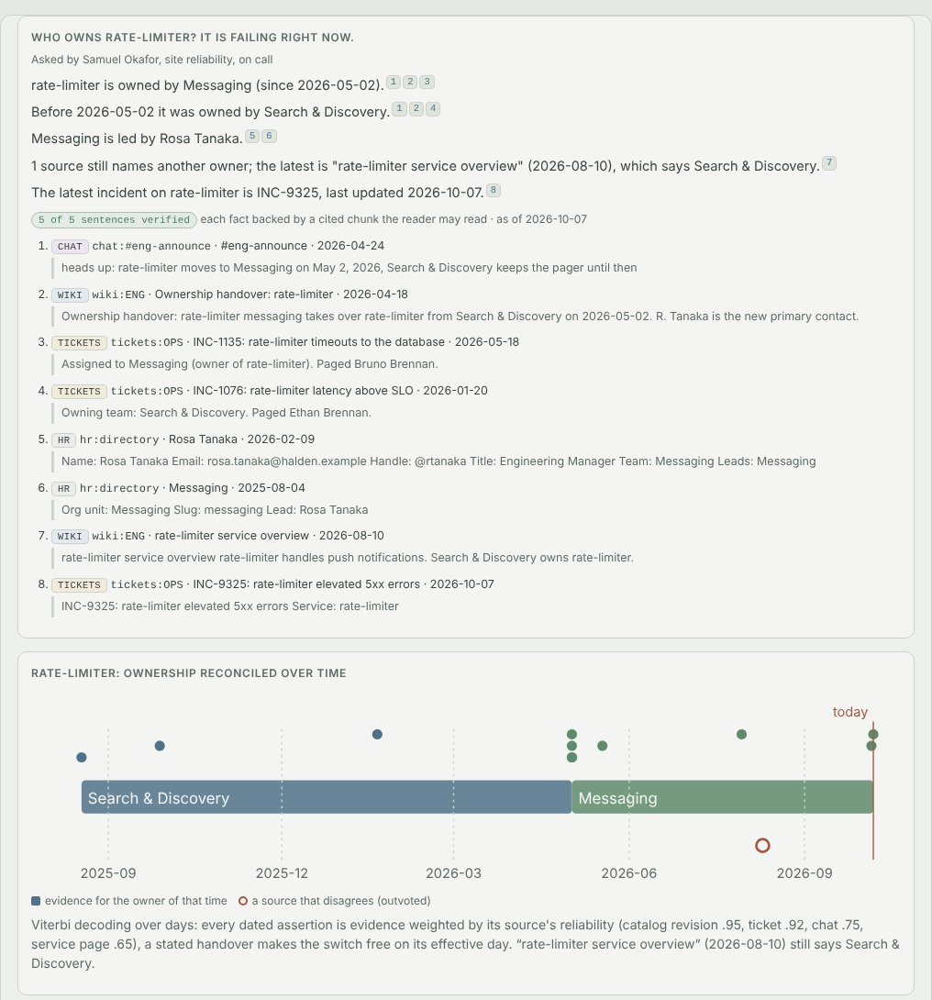
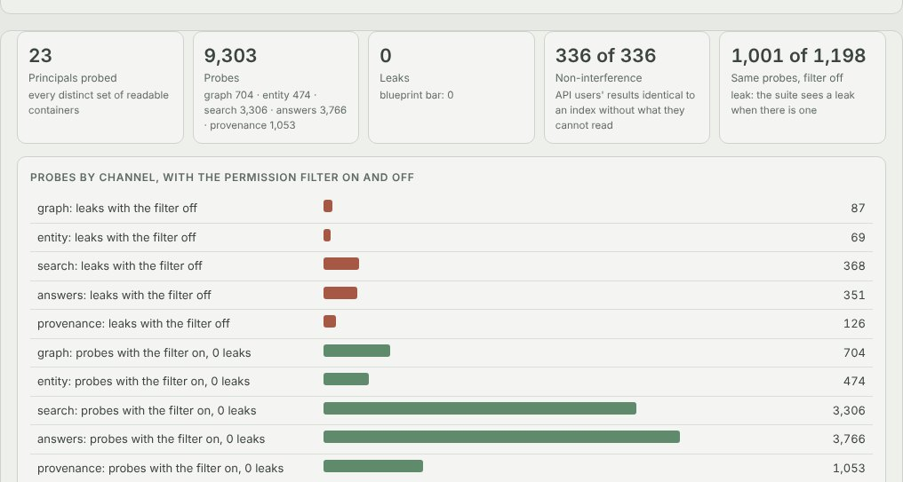

Python · Entity resolution · Permission-aware retrieval · 2026-10
Who Can Know What, and Since When?
A knowledge graph over an invented company's HR directory, service catalog, wiki, tickets, CRM and chat: it explains a vendor choice with a citation for every sentence, names the current owner of a failing service where a stale page still names the old one, and gives an engineer without procurement access an answer built from what they may read, with 0 leaks in 9,303 probes of the demo's security suite.

Built from a written blueprint as one vertical slice. The company is simulated: people, teams, services, vendors, documents and the permissions on them come from a generator in the repository, which also records what every document truly says, so extraction, resolution, ownership and leakage can be scored. No language model is used: extraction, resolution and answers are deterministic models trained here, and because the text comes from templates, their scores show the method works and beats its baselines on this corpus, not how it would read real prose. Not built: an LLM extractor, a neural cross-encoder, Neo4j, OpenSearch, pgvector, Kafka, real connectors, single sign-on.
01 — The problem
A company's answer to "why did we pick this vendor" or "who owns this service now" is spread across a wiki, tickets, a CRM and chat, under names that do not match (an initial here, a nickname there, a team that was renamed), with pages that went stale after the last handover. And not everyone may read all of it: the evaluation sits in procurement's space, the security finding in security's, the price in the contracts. A search tool that filters results after ranking still lets restricted documents shape what everyone sees. Can software read all of it into one graph, tell which names are the same, know who owned what and when, and answer with a citation for every sentence, using only what the person asking is allowed to read, through every way of asking?
Blueprint 7 of twenty in a fourth build book, built as its demo scenario end to end.
02 — What I built
A Python service on PostgreSQL with a background worker and a web page, started by one docker compose up.
- A simulated company: 106 people, 45 services whose owners change, ten vendor decisions, six source systems with 37 permissioned containers, duplicate names, renamed teams and stale pages, with the truth recorded.
- Connectors that sync from a cursor, with the people, groups and access lists.
- Extraction and entity resolution trained on an annotated fifth of the documents; renames become merge proposals a second person approves.
- Ownership over time, reconciled from every dated statement.
- A permission engine that builds each reader's view before anything is ranked, answers where every sentence is cited and re-checked, and a security suite that tries every way out.
03 — How it was built
- 01
A company whose sources disagree
The generator writes fourteen months of an invented company into six systems: HR records, catalog revisions, wiki pages, incident tickets, CRM accounts and contracts, and chat. The same person shows up as "Priya Raman", "P. Raman", "@praman" and an email; two people share an initial and a surname; two share a full name. Service pages keep naming the old owner after a handover, sometimes edited since. People write "X might take over Y next quarter", which looks like a fact and is not. Every document carries what it truly says, which is what everything below is scored against.
t.say(team(new, d - 60, rh), " might take over ", svc(k, rh), " next quarter, nothing decided yet", facts=[F("OWNS", new, k, kind="state", asserted=False)]) - 02
Reading relations, not trigger words
Every pair of mentions in a sentence that could express a relation is scored by a logistic regression over the words between and around them, trained on the annotated fifth. On three held-out companies it reached precision 0.957 to 1.0 and recall 0.971 to 0.992, where trigger words alone reached 0.80 to 0.84 and 0.85 to 0.88: trigger words take hedges, questions and "budget owner" for facts.
between = toks[lo + 1: hi] for w in between: f[f"b:{w}"] = 1 for x, y in zip(between, between[1:]): f[f"bb:{x}_{y}"] = 1 - 03
Which names are the same
Each mention is scored against candidates from the HR directory, catalog and CRM by a pair scorer that reads the mention in its own document (its channel, the teams and services around it) together with the candidate's profile. It links above 0.5 with a margin of 0.2 and abstains when two candidates score alike. B³ F1 0.977 to 0.981 with precision 0.999, against 0.72 to 0.73 for string equality. Renames the corpus states become proposals; the proposer cannot approve.
if best >= LINK_MIN and best - second >= LINK_MARGIN: return cands[order[0]], round(best, 3), "linker" if best >= LINK_MIN: return None, round(best, 3), "ambiguous" - 04
Who owned it, then and now
A service's owner over time is decoded with Viterbi over days: each dated statement is evidence weighted by its source (a catalog revision .95, a ticket .92, chat .75, a service page .65), changing owner costs a constant, and a stated handover makes it free on its effective day. On services that changed hands it was right in 95.7 to 99.3% of months against 90.8 to 96.4% for the latest mention; today, both were right for every service.
if d in trans: # a stated handover: moving to the new owner today is free j, r = trans[d] T[:, :] = move - math.log(r / (1 - r)) T[:, j] = 0.0 - 05
The permission filter goes before everything
A reader's principal, groups and readable containers become a view holding only those rows. BM25's document frequencies, the LSA basis, entity aliases and names, facts and timelines are all computed inside it, so the view answers exactly as an index built without the restricted documents would: 720 of 720 such comparisons on held-out companies were identical. A fact the reader cannot see returns the same 404 as one that does not exist.
self.mask = np.isin(ix.container, list(containers)) ... keep = self.mask[rows] rows, tf = rows[keep], tf[keep] df = len(rows) # inside the view - 06
Answers that cite every sentence
Answers are composed from the reader's facts only; every sentence carries the facts it states and the chunks it cites, and a separate verifier checks that each cited chunk names the fact's subject and object or holds its value. Questions about things the reader's sources do not mention get an abstention worded the same whether the evidence is restricted or absent.
if not tl: abstain(f"I found no evidence of who owns {v.name(svc)}.")
04 — Results
The demo. The procurement analyst asks why Ember Observability was selected: seven sentences, all verified, from the evaluation page, the private channel and the procurement ticket:

The on-call engineer asks the same question and gets what their own sources say, and an abstention on the price where the analyst gets $455,000 a year:

Rate-limiter starts failing; an incremental sync brings in the 10 changed objects, queryable 2.6 s after the request. Who owns it:

The security suite on the demo company:

On three held-out companies:
| System | Baseline | |
|---|---|---|
| Extraction from free text, precision / recall | 0.957–1.0 / 0.971–0.992 | 0.80–0.84 / 0.85–0.88 trigger words |
| Entity resolution, B³ F1 | 0.977–0.981 | 0.72–0.73 string equality |
| Owner of a changed service, every month | 95.7–99.3% | 90.8–96.4% latest mention |
| Retrieval recall@10 | 0.69–0.71 BM25 + graph | 0.33–0.36 BM25; 0.59–0.62 with LSA added |
| Citation coverage | 100% of 1,391 sentences | |
| Permission leaks | 0 in 34,563 probes | 2,660 of 2,888 with the filter off |
Honest limits. The text comes from templates this repository wrote, so extraction and answers are near perfect for a reason that would not survive real prose; that is where an LLM extractor behind the same verifier would earn its place. The vector model did not earn one: LSA fitted per view lowered recall, and the graph is what lifted it. On today's owner the reconciliation was no better than the latest mention on the held-out companies; it wins in the months around a handover. A past month's owner was right 36 times of 39. Entity resolution and extraction run tenant-wide, so which entity a name links to can use the HR directory and catalog a reader cannot see. About 2,200 documents, one in-process index per API worker: nowhere near an enterprise's volume.
Checks. 14 tests, including: a hedge is not a fact for the model but is for trigger words, "P. Raman" resolves to whichever Raman's team channel it sits in, the two Daniel Kims make the linker abstain, a stale page is outvoted after a handover, an engineer's search ranks exactly as on an index without procurement's documents, a tampered citation fails the verifier, a steward cannot approve their own merge proposal, an engineer gets the same 404 as for a fact that does not exist on each evaluation fact in the analyst's answer and on the rejected vendors, and one tenant cannot see another's rows. The Docker stack was run end to end.
05 — What I'd do next
- An LLM extractor on real prose, behind the same verifier and permission view, scored against a hand-labelled sample.
- Per-view indexes as a service, so the permission model scales past one process's memory.
- An unmerge path and merge review with the evidence side by side, since a wrong merge is the quiet way this system would go wrong.